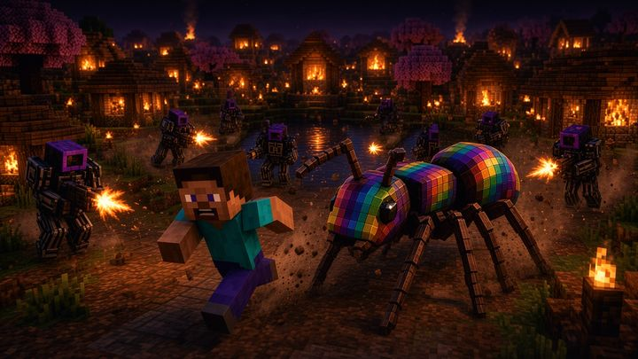
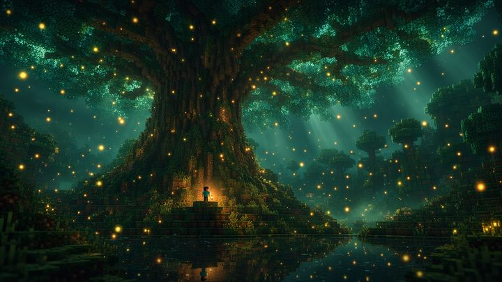
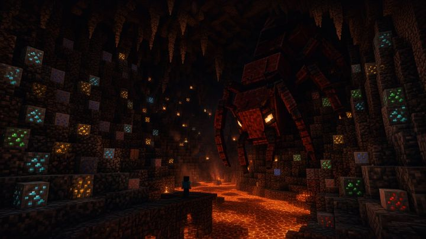
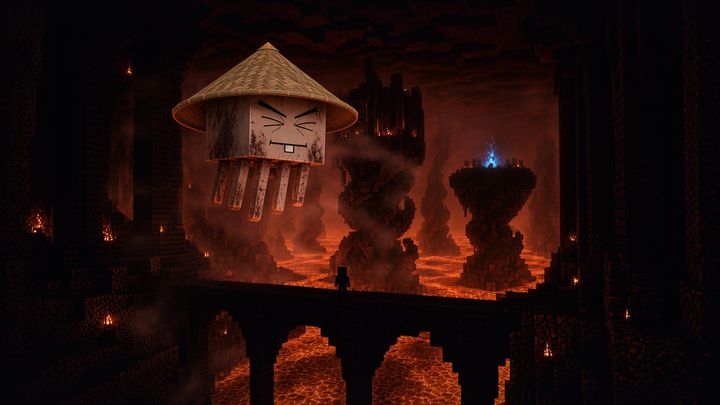
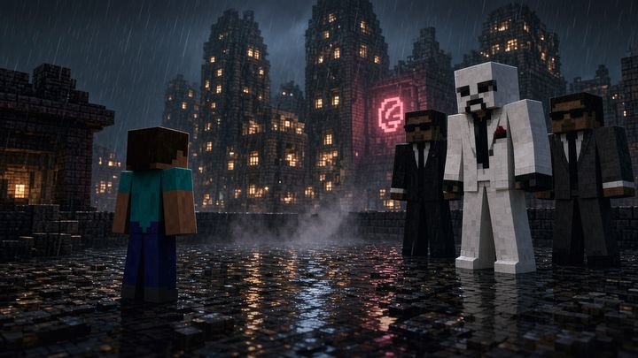

The pack, page by page
What's in Quest Forge and how it fits together. New pages appear here as they're built.

Item index
Every item in the pack with its real in-game icon. Search it the way you would NEI, by name, mod, ore name or tooltip, follow recipes and uses, and see which quests ask for each one.

Mod list
All 111 mods sorted into what they add: dimensions, bosses, magic, tech and gear, each with a line on what it actually does.

Ore atlas
Where every ore sits, dimension by dimension. Its figures come from an older mod set and will be measured again before the server opens, so treat them as rough.

Get the pack
Everything a friend needs to play: the download, the launcher setup and the settings for a slower PC.

Who's online
The server's player list, live: who has joined, and who is on right now.
Twenty-seven worlds
The pack's loading screens, one painted for each place it can take you.